Tabla de contenido
Introducción a Dash¶
Introducción¶
Descargado 600.000 veces al mes, Dash es el marco original de bajo código para construir rápidamente aplicaciones de datos en
Python, R, Julia y F#.Escrito sobre
Plotly.jsyReact.js,Dashes ideal para construir y desplegar aplicaciones de datos con interfaces de usuario personalizadas enPython, R, JuliaoF#. Es particularmente adecuado para cualquiera que trabaje con datos.A través de un par de patrones simples,
Dashabstrae todas las tecnologías y protocolos que se requieren para construir una aplicación web full-stack con visualización de datos interactivos.Dashes lo suficientemente sencillo como para que puedas vincular una interfaz de usuario a tu códigoPython, R, JuliaoF#en menos de 10 minutos.Las aplicaciones de
Dashse muestran en el navegador web. Puedes desplegar tus aplicaciones en máquinas virtuales o clusters Kubernetes y luego compartirlas a través de URLs. Dado que las aplicaciones deDashse ven en el navegador web,Dashes intrínsecamente multiplataforma y está preparado para los dispositivos móviles.Hay mucho detrás del framework. Para saber más sobre cómo está construido y qué motivó a
Dash, lea el post Dash es React para Python. Puede encontrar distintos templates deDashen el siguiente link, los cuales puedes utlizar para tus proyectos: Dash Enterprise App GalleryDashes una librería de código abierto liberada bajo la permisiva licencia MIT.PlotlydesarrollaDashy también ofrece una plataforma para escribir y desplegar aplicacionesDashen un entorno empresarial.
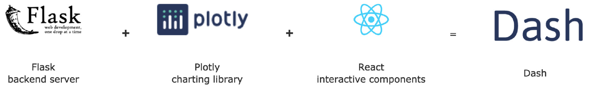
Configuración de su entorno¶
Para la isntalación de
Dashcrearemos un entorno especial, en el cual isntalaremos cada una de las librería que necesitaremos en el transcurso de esta sección, en especial la isntalación deDashmediante la orden:pip install dash. En su esencia, el propósito principal de los entornos virtuales (enviroment) dePythones crear un entorno aislado para los proyectos dePython. Esto significa que cada proyecto puede tener sus propias dependencias, independientemente de las dependencias que tengan los demás proyectos. Lo bueno de esto es que no hay límites en el número de entornos que puedes tener, ya que sólo son directorios que contienen unos pocos scripts. Además, son fácilmente creados usando las herramientas de línea de comandosvirtualenvopyenv, en el caso deanacondapor medio deconda create
Crea un enviroment virtual de
Pythonen una carpeta llamadadash_project(o cualquier otro nombre que quieras). Esto también creará una nueva carpeta con el nombre que hayas elegido. Escriba la siguiente orden un su terminal, en el caso deWindows, en el Command Prompt o en el Windows PowerShell que tiene un aspecta muy parecido al deUbuntu. Puedes elegir la carpeta donde van a reposar todos tusenviroment
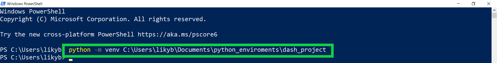
Luego nos vamos a mover a la carpeta que se creó con el enviroment: dash_project usando el comando
cd, y dentro de esta vamos a ejecutar la siguiente orden para activar en enviroment:.\Scripts\activatetal como se muestra en la figura. Notese que en la parte izquierda de la linea de comandos, aparece el nombre del enviroment en color verde, indicando que ha sido creado correctamente y está activado. Luego de activado el enviroment se puede mover al directorio donde desea realizar el desarrollo de esta sección, antes istalaremos algunos librerías
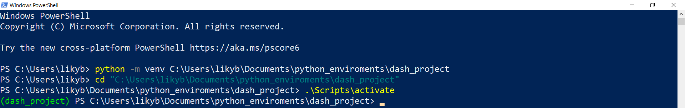
En su terminal, instale dash.
pip install dash
Esto también trae consigo la biblioteca de gráficos plotly. Esta biblioteca está en desarrollo activo, así que instala y actualiza con frecuencia. Si prefieres Jupyter notebook o JupyterLab como entorno de desarrollo, te recomendamos instalar jupyter-dash:
pip install jupyter-dash
También recomendamos instalar
Pandas, que es requerido porPlotly Expressy utilizado en muchos de nuestros ejemplos.
pip install pandas
Estamos listos para crear nuestra primera aplicación Dash. Cada una de estas librerías pueden ser isntaladas también a traves de un archivo con requerimientos, el cual podemos crear con el nombre:
requirements.txty copiar en éste sin espacio a la izquierda el nombre de cada librería, así:
dash
jupyter-dash
pandas
Luego desde la línea de comando ejecutar
pip install -r requirements.txt
Estaremos usando en esta sección
jupyter labdebido a que es gratis. Otras opciones son:Sublime, VS Code, Atomentre otras. Seleccione aquel editor con el que se sienta más comodo. Para instalarjupyter labescriba dentro del mismo enviroment
pip install jupyterlab
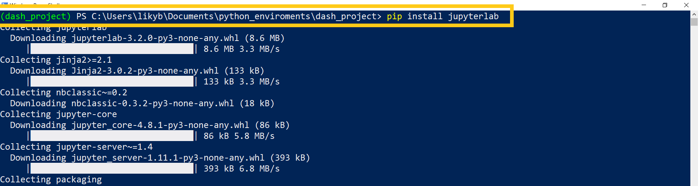
Iniciamos
jupyter labpara crear el archivorequirements.txtcon las librerías a instalar. Éste archivo podemos ir actualizandolo en el transcurso de la sección a medida que una nueva librería va siendo necesaria.
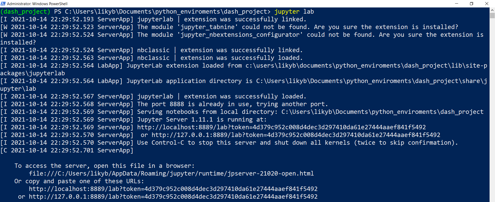 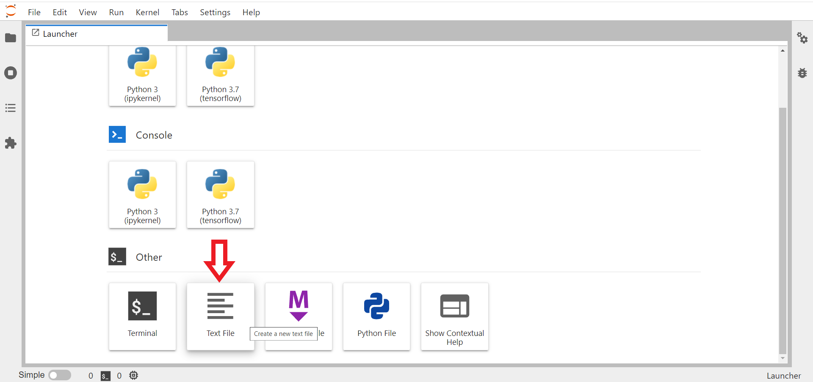
Crea el archivo
requirements.txtcon librerías a instalar. Nótese quejupyter labcuenta también con una terminal integrada, por lo tanto, luego de crear el archivo, puede abrir una terminal dentro dejupyter lab, activar el enviroment y luego instalar las librerías usandopip install -r requirements.txt
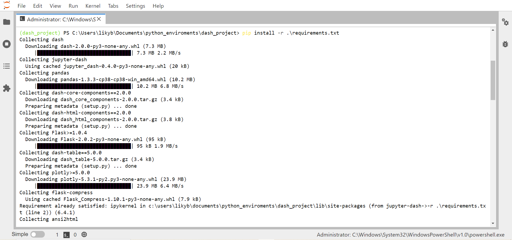
Diseño de Dash¶
Estudiaremos el diseño a través de seis aplicaciones autónomas. El diseño de las aplicaciones
Dashde producción puede ser estilizado con Dash Enterprise Design Kit. Las aplicacionesDashse componen de dos partes. La primera parte es el “diseño” de la aplicación y describe el aspecto de la misma. La segunda parte describe la interactividad de la aplicación y será cubierta más adelante.Mantenemos un conjunto de componentes en la biblioteca
dash_core_componentsydash_html_components(dash.htmla partir deDash v2.0) pero también puedes construir los suyos conJavaScriptyReact.js. A lo largo de esta sección, los ejemplos de códigoPythonestán pensados para ser guardados como archivos y ejecutados usandopython app.py. También puedes usarJupytercon la bibliotecaJupyterDash.Para empezar, crea un archivo llamado
app.py, copia el código de abajo en él y ejecútalo conpython app.pyluego visite http://127.0.0.1:8050/ en su navegador web para ver la aplicación
import dash
from dash import dcc
from dash import html
import plotly.express as px
import pandas as pd
app = dash.Dash(__name__)
df = pd.DataFrame({
"Fruit": ["Apples", "Oranges", "Bananas", "Apples", "Oranges", "Bananas"],
"Amount": [4, 1, 2, 2, 4, 5],
"City": ["SF", "SF", "SF", "Montreal", "Montreal", "Montreal"]
})
fig = px.bar(df, x="Fruit", y="Amount", color="City", barmode="group")
app.layout = html.Div(children=[
html.H1(children='Hello Dash'),
html.Div(children='''
Dash: A web application framework for your data.
'''),
dcc.Graph(
id='example-graph',
figure=fig
)
])
if __name__ == '__main__':
app.run_server(debug=True)
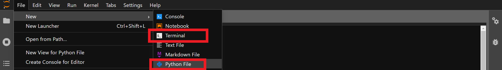 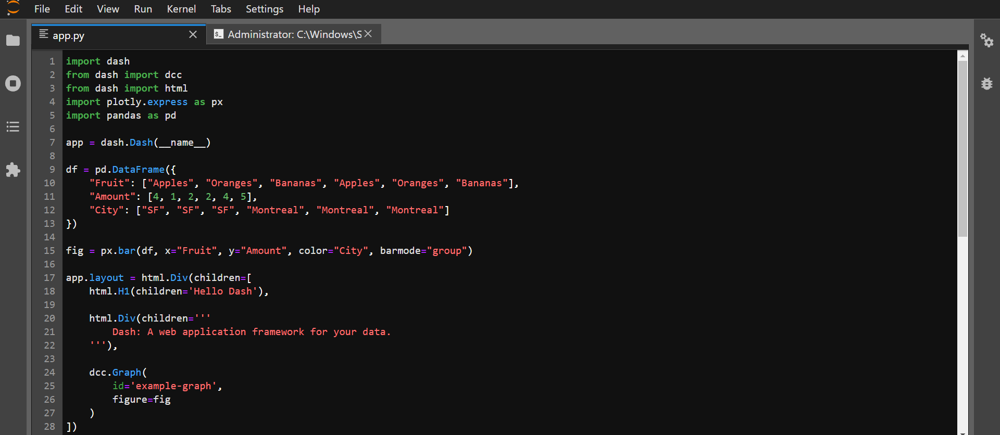 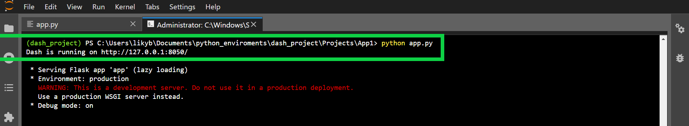 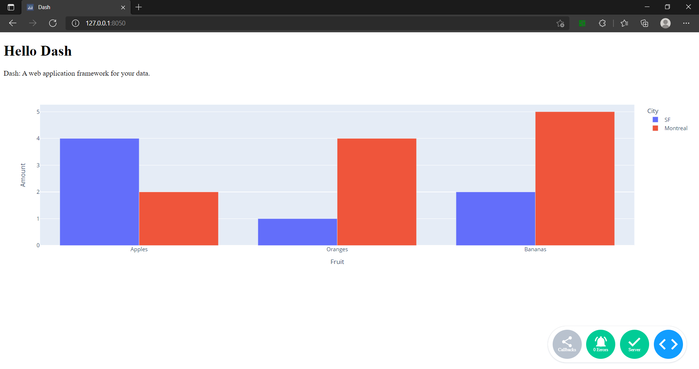
Para tener otro estilo de visualización puede diseñar tu propio archivos
style.csspor jemplo, o utlizar algunos libres que puedes sólo importar, como por ejemplo BootstrapCDN y Plotly themes. Para importar los estilos de temas en tu app debe importar la librería en el el.pyprincipal de tu app:import dash_bootstrap_components as dbc, ademas de usar la siguiente línea para selecionar el tema de interés
app = dash.Dash(external_stylesheets=[dbc.themes.BOOTSTRAP])
Antes debe instalarlo en el enviroment usando:
pip install dash-bootstrap-components
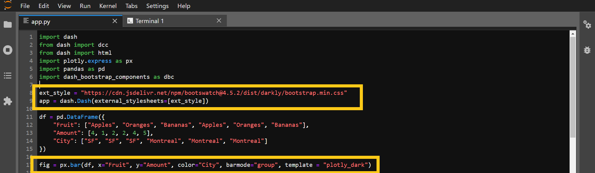 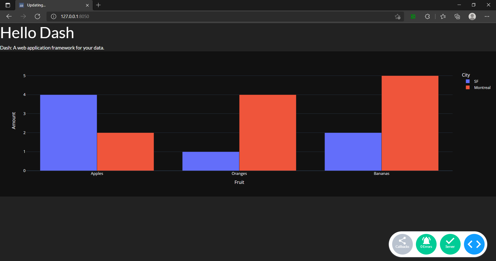
Observaciones
El diseño está compuesto por un árbol de “componentes” como
html.Divydcc.Graph.La biblioteca
dash_html_components(dash.htmla partir deDash v2.0) tiene un componente para cada etiquetaHTML. El componentehtml.H1(children = 'Hola Dash')genera un elementoHTML <h1>Hola Dash</h1>en tu aplicación.h1enHTMLes el primer nivel de encabezado en una página web.No todos los componentes son
HTMLpuro. Losdash_core_componentsdescriben componentes de nivel superior que son interactivos y se generan conJavaScript, HTMLyCSSa través de la bibliotecaReact.js.Cada componente se describe completamente a través de atributos de palabras clave.
Dashes declarativo: usted describirá principalmente su aplicación a través de estos atributos.La propiedad
childrenes especial. Por convención, siempre es el primer atributo, lo que significa que puedes omitirlo:html.H1(children = 'Hello Dash')es lo mismo quehtml.H1('Hello Dash'). Puede contener una cadena, un número, un solo componente o una lista de componentes.Las fuentes en su aplicación se verán un poco diferentes de lo que se muestra en la imágen de arriba a menos que cambie el estilo de la hoja y de
Plotly. Esta aplicación está utilizando una hoja de estilosBootstrapCDNy temasPlotly
Realizar tu primer cambio
Dashincluye “hot-reloading”, esta característica se activa por defecto cuando ejecutas tu aplicación conapp.run_server(debug=True). Esto significa queDashrefrescará automáticamente tu navegador cuando hagas un cambio en tu código. Pruébalo: cambia el título “Hello Dash” en tu aplicación o cambia los datos \(x\) o \(y\). Tu aplicación debería refrescarse automáticamente con tu cambio.
Más información sobre los componentes HTML¶
dash_html_components(dash.htmla partir deDash v2.0) contiene una clase de componente para cada etiquetaHTML, así como argumentos de palabras clave para todos los argumentosHTML. Vamos a personalizar el texto de nuestra aplicación modificando los estilos en línea de los componentes. Crea un archivo llamadoapp.pycon el siguiente código
import dash
from dash import dcc
from dash import html
import plotly.express as px
import pandas as pd
app = dash.Dash(__name__)
colors = {
'background': '#111111',
'text': '#7FDBFF'
}
df = pd.DataFrame({
"Fruit": ["Apples", "Oranges", "Bananas", "Apples", "Oranges", "Bananas"],
"Amount": [4, 1, 2, 2, 4, 5],
"City": ["SF", "SF", "SF", "Montreal", "Montreal", "Montreal"]
})
fig = px.bar(df, x = "Fruit", y = "Amount", color = "City", barmode = "group")
fig.update_layout(
plot_bgcolor = colors['background'],
paper_bgcolor = colors['background'],
font_color = colors['text']
)
app.layout = html.Div(style={'backgroundColor': colors['background']}, children=[
html.H1(
children = 'Hello Dash',
style = {
'textAlign': 'center',
'color': colors['text']
}
),
html.Div(children = 'Dash: A web application framework for your data.', style = {
'textAlign': 'center',
'color': colors['text']
}),
dcc.Graph(
id='example-graph-2',
figure=fig
)
])
if __name__ == '__main__':
app.run_server(debug=True)
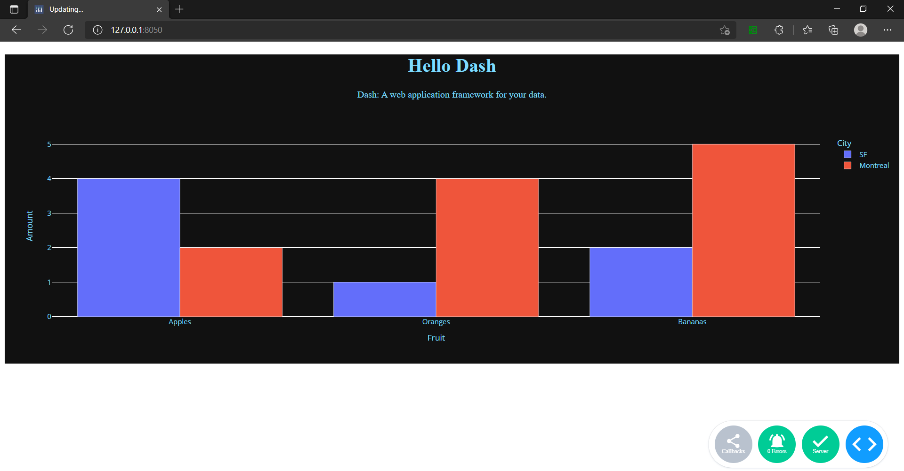
En este ejemplo, hemos modificado los estilos inline de los componentes
html.Divyhtml.H1con la propiedad style.
html.H1('Hello Dash', style={'textAlign': 'center', 'color': '#7FDBFF'})
El código anterior se muestra en la aplicación
Dashcomo
<h1 style="text-align: center; color: #7FDBFF">Hola Dash</h1>.
Hay algunas diferencias importantes entre los componentes
dash_html_(dash.htmla partir deDash v2.0) y los atributosHTML:La propiedad de estilo en
HTMLes una cadena separada por punto y coma. EnDash, sólo se puede proporcionar un diccionario.Las claves (keys) en el diccionario de estilo son camelCased. Así, en lugar de
text-align, estextAlign. El atributo de claseHTMLesclassNameenDash.Los hijos (children) de la etiqueta
HTMLse especifican a través del argumento de la palabra clave children. Por convención, éste es siempre el primer argumento, por lo que a menudo se omite.Además de esto, todos los atributos y etiquetas
HTMLdisponibles están a tu disposición dentro del contexto dePython.
Componentes reutilizables¶
Escribiendo nuestro markup en
Python, podemos crear componentes complejos reutilizables como tablas sin cambiar de contexto o de lenguaje. Aquí hay un ejemplo rápido que genera una tablaTablea partir de un dataframe dePandas. Crea un archivo llamadoapp.pycon el siguiente código
import dash
from dash import html
import pandas as pd
df = pd.read_csv('https://raw.githubusercontent.com/lihkir/Uninorte/main/AppliedStatisticMS/DataVisualizationRPython/Lectures/Python/PythonDataSets/usa-agricultural-exports-2011.csv')
def generate_table(dataframe, max_rows=10):
return html.Table([
html.Thead(
html.Tr([html.Th(col) for col in dataframe.columns])
),
html.Tbody([
html.Tr([
html.Td(dataframe.iloc[i][col]) for col in dataframe.columns
]) for i in range(min(len(dataframe), max_rows))
])
])
app = dash.Dash(__name__)
app.layout = html.Div([
html.H4(children='US Agriculture Exports (2011)'),
generate_table(df)
])
if __name__ == '__main__':
app.run_server(debug=True)
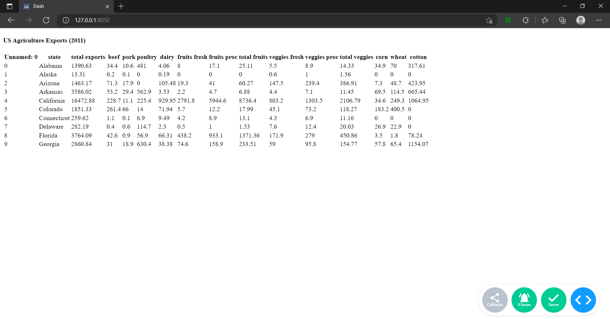
Más información sobre la visualización¶
La librería
dash_core_componentsincluye un componente llamadoGraph.Graphmuestra visualizaciones de datos interactivas utilizando la librería de gráficos de código abiertoplotly.js.Plotly.jsadmite más de 35 tipos de gráficos y los representa tanto enSVGde calidad vectorial como enWebGLde alto rendimiento.El argumento de figura en el
componenteGraphes el mismo argumento de figura que utilizaplotly.py, la biblioteca de gráficosPythonde código abierto dePlotly. Consulte la documentación y la galería de plotly.py para obtener más información. Aquí presentamos un ejemplo que crea un gráfico de dispersión a partir de un marco de datos dePandas. Cree un archivo llamadoapp.pycon el siguiente código:
import dash
from dash import dcc
from dash import html
import plotly.express as px
import pandas as pd
app = dash.Dash(__name__)
df = pd.read_csv('https://raw.githubusercontent.com/lihkir/Uninorte/main/AppliedStatisticMS/DataVisualizationRPython/Lectures/Python/PythonDataSets/gdp-life-exp-2007.csv')
fig = px.scatter(df, x="gdp per capita", y="life expectancy",
size="population", color="continent", hover_name="country",
log_x=True, size_max=60)
app.layout = html.Div([
dcc.Graph(
id='life-exp-vs-gdp',
figure=fig
)
])
if __name__ == '__main__':
app.run_server(debug=True)
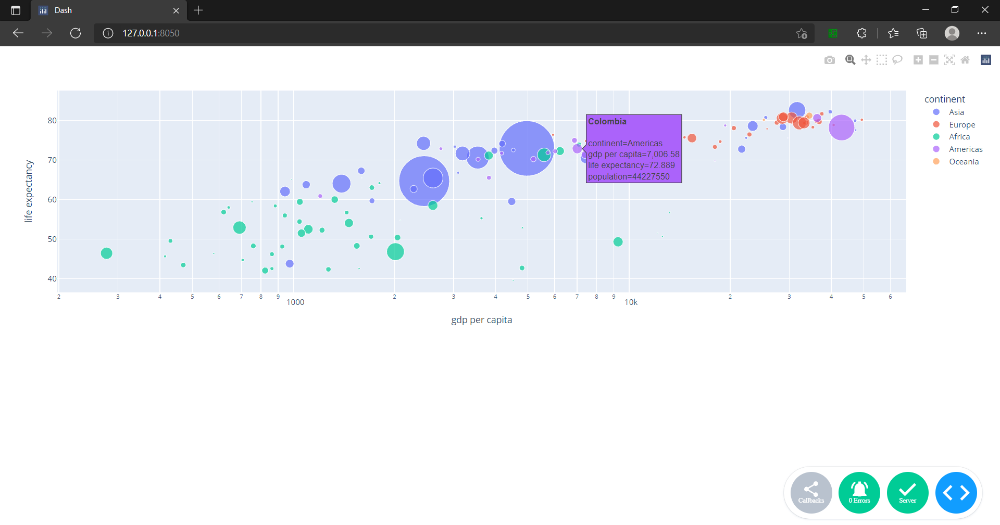
Markdown¶
Aunque
DashexponeHTMLa través dedash_html_components(dash.htmla partir deDash v2.0) , puede ser tedioso escribir tu copia enHTML. Para escribir bloques de texto, puedes utilizar el componenteMarkdownendash_core_components. Crea un archivo llamado app.py con el siguiente código:
import dash
from dash import dcc
from dash import html
app = dash.Dash(__name__)
markdown_text = '''
### Dash and Markdown
- Dash apps can be written in Markdown.
- Dash uses the [CommonMark](http://commonmark.org/) specification of Markdown.
- Check out their [60 Second Markdown Tutorial](http://commonmark.org/help/) if this is your first introduction to Markdown!
'''
app.layout = html.Div([
dcc.Markdown(children=markdown_text)
])
if __name__ == '__main__':
app.run_server(debug=True)
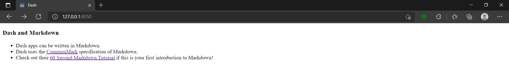
Componentes principales¶
dash_core_componentsincluye un conjunto de componentes de alto nivel como los desplegables, los gráficos, los bloques markdown, etc.Como todos los componentes de
Dash, se describen de forma totalmente declarativa. Cada opción configurable está disponible como un argumento de palabra clave del componente.Veremos muchos de estos componentes a lo largo de la sección. Puedes ver todos los componentes disponibles en la Galería de componentes del núcleo de Dash.
Aquí están algunos de los componentes disponibles. Crea un archivo llamado
app.pycon el siguiente código:
import dash
from dash import dcc
from dash import html
app = dash.Dash(__name__)
app.layout = html.Div([
html.Label('Dropdown'),
dcc.Dropdown(
options=[
{'label': 'New York City', 'value': 'NYC'},
{'label': u'Montréal', 'value': 'MTL'},
{'label': 'San Francisco', 'value': 'SF'}
],
value='MTL'
),
html.Label('Multi-Select Dropdown'),
dcc.Dropdown(
options=[
{'label': 'New York City', 'value': 'NYC'},
{'label': u'Montréal', 'value': 'MTL'},
{'label': 'San Francisco', 'value': 'SF'}
],
value=['MTL', 'SF'],
multi=True
),
html.Label('Radio Items'),
dcc.RadioItems(
options=[
{'label': 'New York City', 'value': 'NYC'},
{'label': u'Montréal', 'value': 'MTL'},
{'label': 'San Francisco', 'value': 'SF'}
],
value='MTL'
),
html.Label('Checkboxes'),
dcc.Checklist(
options=[
{'label': 'New York City', 'value': 'NYC'},
{'label': u'Montréal', 'value': 'MTL'},
{'label': 'San Francisco', 'value': 'SF'}
],
value=['MTL', 'SF']
),
html.Label('Text Input'),
dcc.Input(value='MTL', type='text'),
html.Label('Slider'),
dcc.Slider(
min=0,
max=9,
marks={i: 'Label {}'.format(i) if i == 1 else str(i) for i in range(1, 6)},
value=5,
),
], style={'columnCount': 2})
if __name__ == '__main__':
app.run_server(debug=True)
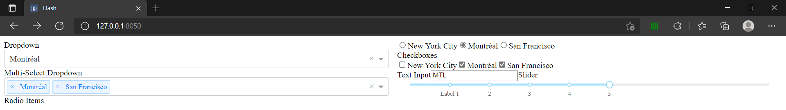
Resumen
El diseño de una aplicación
Dashdescribe el aspecto de la aplicación. El diseño es un árbol jerárquico de componentes. La libreríadash_html_components(dash.htmla partir deDash v2.0) proporciona clases para todas las etiquetasHTMLy los argumentos de las palabras clave describen los atributosHTMLcomostyle, classeid. La bibliotecadash_core_componentsgenera componentes de nivel superior como controles y gráficos.Para consultar la referencia, ver:
La siguiente parte de esta seccíon cubre cómo hacer estas aplicaciones interactivas. Luego estudiaremos con más profundidad algunos Callbacks básicos
Callbacks básicos Dash¶
Como se ha visto, que
app.layoutdescribe el aspecto de la aplicación y es un árbol jerárquico de componentes. La bibliotecadash_html_componentsproporciona clases para todas las etiquetasHTML, y los argumentos de las palabras clave describen los atributosHTMLcomo style,classNameeid. La bibliotecadash_core_componentsgenera componentes de nivel superior como controles y gráficos.Ahora se describirá cómo hacer que tus aplicaciones
Dashutilicen funciones de devolución de llamada (callbacks): funciones que son llamadas automáticamente porDashcada vez que la propiedad de un componente de entrada cambia. Comencemos con un ejemplo sencillo de una aplicación Dash interactiva.
import dash
from dash import dcc
from dash import html
from dash.dependencies import Input, Output
app = dash.Dash(__name__)
app.layout = html.Div([
html.H6("Change the value in the text box to see callbacks in action!"),
html.Div([
"Input: ",
dcc.Input(id='my-input', value='initial value', type='text')
]),
html.Br(),
html.Div(id='my-output'),
])
@app.callback(
Output(component_id='my-output', component_property='children'),
Input(component_id='my-input', component_property='value')
)
def update_output_div(input_value):
return 'Output: {}'.format(input_value)
if __name__ == '__main__':
app.run_server(debug=True)
Observaciones
Las “
inputs” y “outputs” de la interfaz de nuestra aplicación se describen declarativamente como argumentos del decorador@app.callback.a. Al escribir este decorador, le estamos diciendo a
Dashque llame a esta función por nosotros cada vez que el valor del componente “input” (la caja de texto) cambie para actualizar loschildrendel componente “output” en la página (eldiv HTML).b. Puedes usar cualquier nombre para la función que está envuelta por el decorador
@app.callback. La convención es que el nombre describa la(s) salida(s) delcallback.c. Puede utilizar cualquier nombre para los argumentos de la función, pero debe utilizar los mismos nombres dentro de la función de devolución de llamada que en su definición, al igual que en una función normal de
Python. Los argumentos son posicionales por defecto: primero los elementos de entrada y luego los elementos de estado se dan en el mismo orden que en el decorador. También tiene la opción de utilizar argumentos de palabra clave con nombre, en lugar de posicionales.d. Debes utilizar el mismo
idque le diste a un componenteDashen elapp.layoutcuando te refieras a él como entrada o salida del decorador@app.callback.e. El decorador
@app.callbackdebe estar directamente encima de la declaración de la funcióncallback. Si hay una línea en blanco entre el decorador y la definición de la función, el registro de la devolución de llamada no tendrá éxito.En
Dash, losinputsyoutputsde nuestra aplicación son simplemente las propiedades de un componente en particular. En este ejemplo, nuestroinputes la propiedad “value” del componente que tiene elID“my-input”. Nuestra salida es la propiedad “children” del componente con elID“my-input”.Cada vez que una propiedad de entrada cambia, la función que el decorador
callbackenvuelve será llamada automáticamente.Dashproporciona a la función el nuevo valor de la propiedad de entrada como argumento de entrada yDashactualiza la propiedad del componente de salida con lo que haya devuelto la función.Las palabras clave
component_idycomponent_propertyson opcionales (sólo hay dos argumentos para cada uno de esos objetos). Se incluyen en este ejemplo para mayor claridad, pero se omitirán en el resto de la sección en aras de la brevedad y la legibilidad.No confunda el objeto
dash.dependencies.Inputcon el objetodcc.Input. El primero sólo se utiliza en estas definiciones decallbacky el segundo es un componente real.Nótese que no establecemos un valor para la propiedad
childrendel componentemy-outputen ellayout. Cuando la aplicaciónDashse inicia, llama automáticamente a todos loscallbackscon los valores iniciales de los componentes de entrada para rellenar el estado inicial de los componentes de salida. En este ejemplo, si se especifica algo comohtml.Div(id='my-output', children='Hola mundo'), se sobrescribiría cuando la aplicación se inicia.Con la interactividad de
Dash, podemos actualizar dinámicamente cualquier propiedad a través de una funcióncallback. ¡Frecuentemente actualizaremos loschildrende un componente para mostrar nuevo texto o la figura de un componentedcc.Graphpara mostrar nuevos datos, pero también podríamos actualizar el estilo de un componente o incluso las opciones disponibles de un componentedcc.Dropdown. Veamos otro ejemplo en el que undcc.Slideractualiza undcc.Graph.
Dash App Layout con Figura y Sliderm¶
import dash
from dash import dcc
from dash import html
from dash.dependencies import Input, Output
import plotly.express as px
import pandas as pd
df = pd.read_csv('https://raw.githubusercontent.com/lihkir/Uninorte/main/AppliedStatisticMS/DataVisualizationRPython/Lectures/Python/PythonDataSets/gapminderDataFiveYear.csv')
app = dash.Dash(__name__)
app.layout = html.Div([
dcc.Graph(id='graph-with-slider'),
dcc.Slider(
id='year-slider',
min=df['year'].min(),
max=df['year'].max(),
value=df['year'].min(),
marks={str(year): str(year) for year in df['year'].unique()},
step=None
)
])
@app.callback(
Output('graph-with-slider', 'figure'),
Input('year-slider', 'value'))
def update_figure(selected_year):
filtered_df = df[df.year == selected_year]
fig = px.scatter(filtered_df, x="gdpPercap", y="lifeExp",
size="pop", color="continent", hover_name="country",
log_x=True, size_max=55)
fig.update_layout(transition_duration=500)
return fig
if __name__ == '__main__':
app.run_server(debug=True)
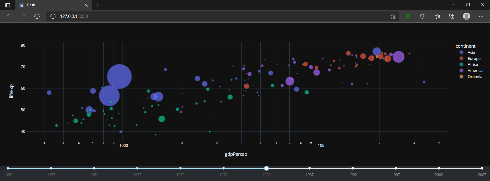
Recuerde que siempre puede cambiar el estilo de su figura y la hoja. Sólo debe cambiar las siguientes lineas
ext_style = "https://cdn.jsdelivr.net/npm/bootswatch@4.5.2/dist/slate/bootstrap.min.css"
app = dash.Dash(external_stylesheets=[ext_style])
fig = px.scatter(filtered_df, x="gdpPercap", y="lifeExp",
size="pop", color="continent", hover_name="country",
log_x=True, size_max=55, template="plotly_dark")
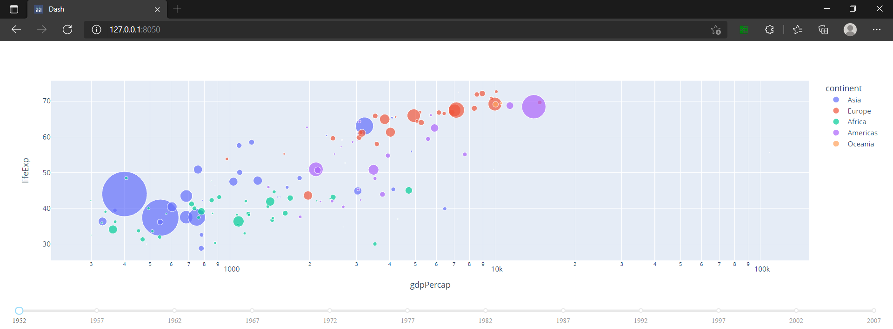
En este ejemplo, la propiedad “
value” deldcc.Slideres la entrada de la app y la salida de la app es la propiedad “figure” deldcc.Graph. Cada vez que el valor deldcc.Slidercambia,Dashllama a la función callbackupdate_figurecon el nuevo valor. La función filtra el dataframe con este nuevo valor, construye un objeto figura y lo devuelve a la aplicaciónDash.Hay algunos patrones agradables en este ejemplo:
Utilizamos la biblioteca
Pandaspara cargar nuestrodataframeal inicio de la aplicación:df = pd.read_csv('...'). Este dataframedfestá en el estado global de la app y puede ser leído dentro de las funciones callback.La carga de datos en memoria puede ser costosa. Al cargar los datos de consulta al inicio de la app en lugar de dentro de las funciones callback, nos aseguramos de que esta operación sólo se realiza cuando se inicia el servidor de la app. Cuando un usuario visita la app o interactúa con ella, esos datos (
df) ya están en memoria. Si es posible, la inicialización costosa (como la descarga o la consulta de datos) debería hacerse en el ámbito global de la app en lugar de dentro de las funciones callback.El callback no modifica los datos originales, sólo crea copias del dataframe filtrando a través de los filtros de pandas. Esto es importante: sus callbacks nunca deben mutar las variables fuera de su ámbito. Si tus callbacks modifican el estado global, entonces la sesión de un usuario podría afectar a la sesión del siguiente usuario y cuando la aplicación se despliegue en múltiples procesos o hilos, esas modificaciones no se compartirán entre sesiones.
Activamos las transiciones con
layout.transitionpara dar una idea de cómo evoluciona el conjunto de datos con el tiempo: las transiciones permiten que el gráfico se actualice de un estado a otro de forma suave, como si estuviera animado.
Aplicación Dash con múltiples entradas¶
En
Dash, cualquier “Output” puede tener múltiples componentes “Input”. Aquí hay un ejemplo simple que une cincoInputs(la propiedad value de dos componentesdcc.Dropdown, dos componentesdcc.RadioItems, y un componentedcc.Slider) a 1 componenteOutput(la propiedad figure del componenteGraph). Observe cómoapp.callbackenumera los cinco elementos de entrada después de la salida.
import dash
from dash import dcc
from dash import html
from dash.dependencies import Input, Output
import plotly.express as px
import pandas as pd
app = dash.Dash(__name__)
df = pd.read_csv('https://raw.githubusercontent.com/lihkir/Uninorte/main/AppliedStatisticMS/DataVisualizationRPython/Lectures/Python/PythonDataSets/country_indicators.csv')
available_indicators = df['Indicator Name'].unique()
app.layout = html.Div([
html.Div([
html.Div([
dcc.Dropdown(
id='xaxis-column',
options=[{'label': i, 'value': i} for i in available_indicators],
value='Fertility rate, total (births per woman)'
),
dcc.RadioItems(
id='xaxis-type',
options=[{'label': i, 'value': i} for i in ['Linear', 'Log']],
value='Linear',
labelStyle={'display': 'inline-block'}
)
], style={'width': '48%', 'display': 'inline-block'}),
html.Div([
dcc.Dropdown(
id='yaxis-column',
options=[{'label': i, 'value': i} for i in available_indicators],
value='Life expectancy at birth, total (years)'
),
dcc.RadioItems(
id='yaxis-type',
options=[{'label': i, 'value': i} for i in ['Linear', 'Log']],
value='Linear',
labelStyle={'display': 'inline-block'}
)
], style={'width': '48%', 'float': 'right', 'display': 'inline-block'})
]),
dcc.Graph(id='indicator-graphic'),
dcc.Slider(
id='year--slider',
min=df['Year'].min(),
max=df['Year'].max(),
value=df['Year'].max(),
marks={str(year): str(year) for year in df['Year'].unique()},
step=None
)
])
@app.callback(
Output('indicator-graphic', 'figure'),
Input('xaxis-column', 'value'),
Input('yaxis-column', 'value'),
Input('xaxis-type', 'value'),
Input('yaxis-type', 'value'),
Input('year--slider', 'value'))
def update_graph(xaxis_column_name, yaxis_column_name,
xaxis_type, yaxis_type,
year_value):
dff = df[df['Year'] == year_value]
fig = px.scatter(x=dff[dff['Indicator Name'] == xaxis_column_name]['Value'],
y=dff[dff['Indicator Name'] == yaxis_column_name]['Value'],
hover_name=dff[dff['Indicator Name'] == yaxis_column_name]['Country Name'])
fig.update_layout(margin={'l': 40, 'b': 40, 't': 10, 'r': 0}, hovermode='closest')
fig.update_xaxes(title=xaxis_column_name,
type='linear' if xaxis_type == 'Linear' else 'log')
fig.update_yaxes(title=yaxis_column_name,
type='linear' if yaxis_type == 'Linear' else 'log')
return fig
if __name__ == '__main__':
app.run_server(debug=True)
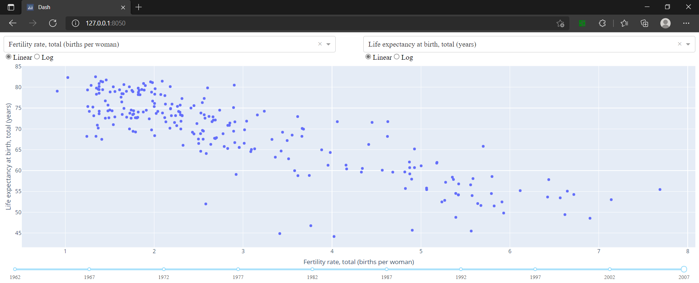
En este ejemplo, la llamada de retorno se ejecuta cada vez que cambia la propiedad value de los componentes
dcc.Dropdown, dcc.Sliderodcc.RadioItems. Los argumentos de entrada de la llamada de retorno son el valor nuevo o actual de cada una de las propiedades de entrada, en el orden en que fueron especificadas.Aunque sólo un único
Inputcambia a la vez (un usuario sólo puede cambiar el valor de un únicoDropdownen un momento dado),Dashrecoge el estado actual de todas las propiedadesInputespecificadas y las pasa a su función por usted. Se garantiza que tus funcionescallbacksiempre reciben el estado representativo de la aplicación.
Aplicación Dash con múltiples salidas¶
Hasta ahora todos los
callbacksque hemos escrito sólo actualizan una propiedad de salida. También podemos actualizar varias a la vez: enumera todas las propiedades que quieras actualizar enapp.callback, y devuelve ese número de elementos desde elcallback. Esto es particularmente bueno si dos salidas dependen del mismo resultado intermedio computacionalmente intenso, como una consulta lenta a la base de datos.
import dash
from dash import dcc
from dash import html
from dash.dependencies import Input, Output
external_stylesheets = ['https://codepen.io/chriddyp/pen/bWLwgP.css']
app = dash.Dash(__name__, external_stylesheets=external_stylesheets)
app.layout = html.Div([
dcc.Input(
id='num-multi',
type='number',
value=5
),
html.Table([
html.Tr([html.Td(['x', html.Sup(2)]), html.Td(id='square')]),
html.Tr([html.Td(['x', html.Sup(3)]), html.Td(id='cube')]),
html.Tr([html.Td([2, html.Sup('x')]), html.Td(id='twos')]),
html.Tr([html.Td([3, html.Sup('x')]), html.Td(id='threes')]),
html.Tr([html.Td(['x', html.Sup('x')]), html.Td(id='x^x')]),
]),
])
@app.callback(
Output('square', 'children'),
Output('cube', 'children'),
Output('twos', 'children'),
Output('threes', 'children'),
Output('x^x', 'children'),
Input('num-multi', 'value'))
def callback_a(x):
return x**2, x**3, 2**x, 3**x, x**x
if __name__ == '__main__':
app.run_server(debug=True)
No siempre es una buena idea combinar las salidas, aunque se pueda. Si las Salidas dependen de algunas pero no todas las mismas Entradas, mantenerlas separadas puede evitar actualizaciones innecesarias. Si tienen las mismas Entradas pero hacen cálculos independientes con estas entradas, mantener las devoluciones de llamada separadas puede permitir que se ejecuten en paralelo.
Dash App con callbacks encadenados¶
También puedes encadenar salidas y entradas: la salida de una función
callbackpuede ser la entrada de otra funcióncallback. Este patrón puede ser utilizado para crearUIsdinámicas donde un componente de entrada actualiza las opciones disponibles del siguiente componente de entrada
import dash
from dash import dcc
from dash import html
from dash.dependencies import Input, Output
external_stylesheets = ['https://codepen.io/chriddyp/pen/bWLwgP.css']
app = dash.Dash(__name__, external_stylesheets=external_stylesheets)
all_options = {
'America': ['New York City', 'San Francisco', 'Cincinnati'],
'Canada': [u'Montréal', 'Toronto', 'Ottawa']
}
app.layout = html.Div([
dcc.RadioItems(
id='countries-radio',
options=[{'label': k, 'value': k} for k in all_options.keys()],
value='America'
),
html.Hr(),
dcc.RadioItems(id='cities-radio'),
html.Hr(),
html.Div(id='display-selected-values')
])
@app.callback(
Output('cities-radio', 'options'),
Input('countries-radio', 'value'))
def set_cities_options(selected_country):
return [{'label': i, 'value': i} for i in all_options[selected_country]]
@app.callback(
Output('cities-radio', 'value'),
Input('cities-radio', 'options'))
def set_cities_value(available_options):
return available_options[0]['value']
@app.callback(
Output('display-selected-values', 'children'),
Input('countries-radio', 'value'),
Input('cities-radio', 'value'))
def set_display_children(selected_country, selected_city):
return u'{} is a city in {}'.format(
selected_city, selected_country,
)
if __name__ == '__main__':
app.run_server(debug=True)
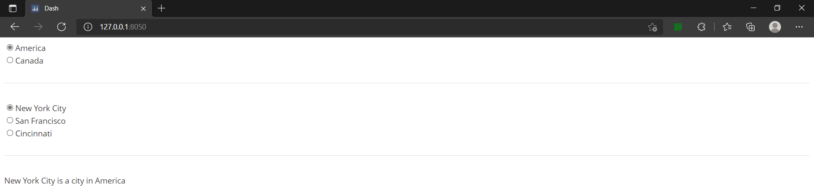
El primer
callbackactualiza las opciones disponibles en el segundo componentedcc.RadioItemsbasándose en el valor seleccionado en el primer componentedcc.RadioItems.El segundo
callbackestablece un valor inicial cuando la propiedad options cambia: lo establece al primer valor de ese array de opciones.La última llamada de retorno muestra el valor seleccionado de cada componente. Si cambia el valor del componente countries
dcc.RadioItems,Dashesperará hasta que se actualice el valor del componentecitiesantes de llamar alcallbackfinal. Esto evita que suscallbackssean llamados con un estado inconsistente como con “America” y “Montréal”.
Dash App con Estado¶
En algunos casos, puede tener un patrón de tipo “formulario” en su aplicación. En esta situación, es posible que quieras leer el valor del componente de entrada, pero sólo cuando el usuario haya terminado de introducir toda su información en el formulario. Adjuntar una llamada de retorno a los valores de entrada directamente puede tener este aspecto:
import dash
from dash import dcc
from dash import html
from dash.dependencies import Input, Output
external_stylesheets = ["https://codepen.io/chriddyp/pen/bWLwgP.css"]
app = dash.Dash(__name__, external_stylesheets=external_stylesheets)
app.layout = html.Div([
dcc.Input(id="input-1", type="text", value="Montréal"),
dcc.Input(id="input-2", type="text", value="Canada"),
html.Div(id="number-output"),
])
@app.callback(
Output("number-output", "children"),
Input("input-1", "value"),
Input("input-2", "value"),
)
def update_output(input1, input2):
return u'Input 1 is "{}" and Input 2 is "{}"'.format(input1, input2)
if __name__ == "__main__":
app.run_server(debug=True)
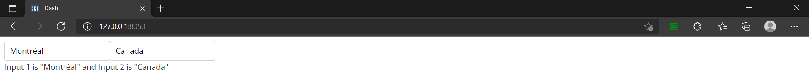
En este ejemplo, la función
callbackse dispara cada vez que cambia alguno de los atributos descritos por la Entrada. Pruébelo usted mismo introduciendo datos en las entradas anteriores. El estado le permite pasar valores adicionales sin disparar las devoluciones de llamada. Aquí está el mismo ejemplo anterior pero con eldcc.InputcomoStatey un botón comoInput.
import dash
from dash import dcc
from dash import html
from dash.dependencies import Input, Output, State
import dash_design_kit as ddk
external_stylesheets = ['https://codepen.io/chriddyp/pen/bWLwgP.css']
app = dash.Dash(__name__, external_stylesheets=external_stylesheets)
app.layout = html.Div([
dcc.Input(id='input-1-state', type='text', value='Montréal'),
dcc.Input(id='input-2-state', type='text', value='Canada'),
html.Button(id='submit-button-state', n_clicks=0, children='Submit'),
html.Div(id='output-state')
])
@app.callback(Output('output-state', 'children'),
Input('submit-button-state', 'n_clicks'),
State('input-1-state', 'value'),
State('input-2-state', 'value'))
def update_output(n_clicks, input1, input2):
return u'''
The Button has been pressed {} times,
Input 1 is "{}",
and Input 2 is "{}"
'''.format(n_clicks, input1, input2)
if __name__ == '__main__':
app.run_server(debug=True)
En este ejemplo, el cambio de texto en los cuadros
dcc.Inputno disparará elcallbackpero sí lo hará el clic en el botón. Los valores actuales de los valores dedcc.Inputson pasados alcallbackaunque no activen la funcióncallbacken sí.Tenga en cuenta que estamos activando el
callbackescuchando la propiedadn_clicksdel componentehtml.Button.n_clickses una propiedad que se incrementa cada vez que se hace clic en el componente. Está disponible en todos los componentes de la bibliotecadash_html_components.
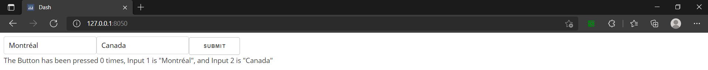
En este ejemplo, el cambio de texto en los cuadros
dcc.Inputno disparará el callback pero sí lo hará el clic en el botón. Los valores actuales de los valores dedcc.Inputson pasados al callback aunque no activen la función callback en sí.Tenga en cuenta que estamos activando el callback escuchando la propiedad
n_clicksdel componentehtml.Button.n_clickses una propiedad que se incrementa cada vez que se hace clic en el componente. Está disponible en todos los componentes de la bibliotecadash_html_components.Hemos cubierto los fundamentos de los
callbacksenDash. Las aplicacionesDashestán construidas a partir de un conjunto de principios simples pero poderosos:UIsdeclarativas que son personalizables a través de callbacks reactivos y funcionales dePython. Cada atributo del elemento de los componentes declarativos puede ser actualizado a través de uncallbacky un subconjunto de los atributos, como las propiedades del valor deldcc.Dropdown, son editables por el usuario en la interfaz.
Actualizar gráficos al deslizar el cursor¶
Actualicemos nuestro ejemplo de indicadores mundiales del capítulo anterior, actualizando las series de tiempo cuando pasamos por encima de los puntos de nuestro gráfico de dispersión.
import dash
from dash import dcc
from dash import html
import pandas as pd
import plotly.express as px
external_stylesheets = ['https://codepen.io/chriddyp/pen/bWLwgP.css']
app = dash.Dash(__name__, external_stylesheets=external_stylesheets)
df = pd.read_csv('https://raw.githubusercontent.com/lihkir/Uninorte/main/AppliedStatisticMS/DataVisualizationRPython/Lectures/Python/PythonDataSets/country_indicators.csv')
available_indicators = df['Indicator Name'].unique()
app.layout = html.Div([
html.Div([
html.Div([
dcc.Dropdown(
id='crossfilter-xaxis-column',
options=[{'label': i, 'value': i} for i in available_indicators],
value='Fertility rate, total (births per woman)'
),
dcc.RadioItems(
id='crossfilter-xaxis-type',
options=[{'label': i, 'value': i} for i in ['Linear', 'Log']],
value='Linear',
labelStyle={'display': 'inline-block', 'marginTop': '5px'}
)
],
style={'width': '49%', 'display': 'inline-block'}),
html.Div([
dcc.Dropdown(
id='crossfilter-yaxis-column',
options=[{'label': i, 'value': i} for i in available_indicators],
value='Life expectancy at birth, total (years)'
),
dcc.RadioItems(
id='crossfilter-yaxis-type',
options=[{'label': i, 'value': i} for i in ['Linear', 'Log']],
value='Linear',
labelStyle={'display': 'inline-block', 'marginTop': '5px'}
)
], style={'width': '49%', 'float': 'right', 'display': 'inline-block'})
], style={
'padding': '10px 5px'
}),
html.Div([
dcc.Graph(
id='crossfilter-indicator-scatter',
hoverData={'points': [{'customdata': 'Japan'}]}
)
], style={'width': '49%', 'display': 'inline-block', 'padding': '0 20'}),
html.Div([
dcc.Graph(id='x-time-series'),
dcc.Graph(id='y-time-series'),
], style={'display': 'inline-block', 'width': '49%'}),
html.Div(dcc.Slider(
id='crossfilter-year--slider',
min=df['Year'].min(),
max=df['Year'].max(),
value=df['Year'].max(),
marks={str(year): str(year) for year in df['Year'].unique()},
step=None
), style={'width': '49%', 'padding': '0px 20px 20px 20px'})
])
@app.callback(
dash.dependencies.Output('crossfilter-indicator-scatter', 'figure'),
[dash.dependencies.Input('crossfilter-xaxis-column', 'value'),
dash.dependencies.Input('crossfilter-yaxis-column', 'value'),
dash.dependencies.Input('crossfilter-xaxis-type', 'value'),
dash.dependencies.Input('crossfilter-yaxis-type', 'value'),
dash.dependencies.Input('crossfilter-year--slider', 'value')])
def update_graph(xaxis_column_name, yaxis_column_name,
xaxis_type, yaxis_type,
year_value):
dff = df[df['Year'] == year_value]
fig = px.scatter(x=dff[dff['Indicator Name'] == xaxis_column_name]['Value'],
y=dff[dff['Indicator Name'] == yaxis_column_name]['Value'],
hover_name=dff[dff['Indicator Name'] == yaxis_column_name]['Country Name']
)
fig.update_traces(customdata=dff[dff['Indicator Name'] == yaxis_column_name]['Country Name'])
fig.update_xaxes(title=xaxis_column_name, type='linear' if xaxis_type == 'Linear' else 'log')
fig.update_yaxes(title=yaxis_column_name, type='linear' if yaxis_type == 'Linear' else 'log')
fig.update_layout(margin={'l': 40, 'b': 40, 't': 10, 'r': 0}, hovermode='closest')
return fig
def create_time_series(dff, axis_type, title):
fig = px.scatter(dff, x='Year', y='Value')
fig.update_traces(mode='lines+markers')
fig.update_xaxes(showgrid=False)
fig.update_yaxes(type='linear' if axis_type == 'Linear' else 'log')
fig.add_annotation(x=0, y=0.85, xanchor='left', yanchor='bottom',
xref='paper', yref='paper', showarrow=False, align='left',
text=title)
fig.update_layout(height=225, margin={'l': 20, 'b': 30, 'r': 10, 't': 10})
return fig
@app.callback(
dash.dependencies.Output('x-time-series', 'figure'),
[dash.dependencies.Input('crossfilter-indicator-scatter', 'hoverData'),
dash.dependencies.Input('crossfilter-xaxis-column', 'value'),
dash.dependencies.Input('crossfilter-xaxis-type', 'value')])
def update_y_timeseries(hoverData, xaxis_column_name, axis_type):
country_name = hoverData['points'][0]['customdata']
dff = df[df['Country Name'] == country_name]
dff = dff[dff['Indicator Name'] == xaxis_column_name]
title = '<b>{}</b><br>{}'.format(country_name, xaxis_column_name)
return create_time_series(dff, axis_type, title)
@app.callback(
dash.dependencies.Output('y-time-series', 'figure'),
[dash.dependencies.Input('crossfilter-indicator-scatter', 'hoverData'),
dash.dependencies.Input('crossfilter-yaxis-column', 'value'),
dash.dependencies.Input('crossfilter-yaxis-type', 'value')])
def update_x_timeseries(hoverData, yaxis_column_name, axis_type):
dff = df[df['Country Name'] == hoverData['points'][0]['customdata']]
dff = dff[dff['Indicator Name'] == yaxis_column_name]
return create_time_series(dff, axis_type, yaxis_column_name)
if __name__ == '__main__':
app.run_server(debug=True)
Intente pasar el mouse por encima de los puntos del gráfico de dispersión de la izquierda. ¿Observa cómo los gráficos de líneas de la derecha se actualizan en función del punto sobre el que pasas el mouse?.
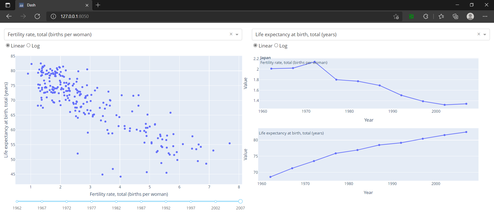
Dos ejemplos de Dash¶
En esta sección estudiaremos dos ejemplos de app dash para poner en practica los estudiado en las dos primeras secciones. El primero es relacionado con mapas y el segundo con series de tiempo financieras. El objetivo principal es hacer uso de la metdología aprender por ejemplos
Dash App para Mapas¶
Iniciamos cargando el
DataFramea utlizar en nuestra app. Los datos provienen del archivointro_bees.csvque contiene información sobre enfermedades que afectan a ciertas colonias de abejas, en determinados estados en USA. Las columnas de interés en este ejemplo son:['State', 'ANSI', 'Affected by', 'Year', 'state_code']. El códigoANSIes el Códigos del Instituto Nacional de Normalización:American National Standards Institute codes (ANSI codes)
import pandas as pd
df = pd.read_csv("https://raw.githubusercontent.com/lihkir/Uninorte/main/AppliedStatisticMS/DataVisualizationRPython/Lectures/Python/PythonDataSets/intro_bees.csv")
df.head()
| Program | Year | Period | State | ANSI | Affected by | Pct of Colonies Impacted | state_code | |
|---|---|---|---|---|---|---|---|---|
| 0 | SURVEY | 2019 | JAN THRU MAR | Alabama | 1 | Disease | 1.8 | AL |
| 1 | SURVEY | 2019 | JAN THRU MAR | Alabama | 1 | Other | 3.1 | AL |
| 2 | SURVEY | 2019 | JAN THRU MAR | Alabama | 1 | Pesticides | 0.3 | AL |
| 3 | SURVEY | 2019 | JAN THRU MAR | Alabama | 1 | Pests_excl_Varroa | 22.7 | AL |
| 4 | SURVEY | 2019 | JAN THRU MAR | Alabama | 1 | Unknown | 9.0 | AL |
Luego agrupamos nuestro
DataFramebasados en las columnas de interés y calculamos el porcentaje promedio de colonias afectadas para esta agrupación'Pct of Colonies Impacted'
df = df.groupby(['State', 'ANSI', 'Affected by', 'Year', 'state_code'])[['Pct of Colonies Impacted']].mean()
df.reset_index(inplace=True)
df.head()
| State | ANSI | Affected by | Year | state_code | Pct of Colonies Impacted | |
|---|---|---|---|---|---|---|
| 0 | Alabama | 1 | Disease | 2015 | AL | 0.05 |
| 1 | Alabama | 1 | Disease | 2016 | AL | 1.20 |
| 2 | Alabama | 1 | Disease | 2017 | AL | 2.25 |
| 3 | Alabama | 1 | Disease | 2018 | AL | 1.30 |
| 4 | Alabama | 1 | Disease | 2019 | AL | 1.80 |
Comenzamos a implementar nuestro
app.layoutque como es sabido, esta componente corresponde al “diseño” de la aplicación y describe el aspecto de la misma.html.H1recuerde que es una envoltura para el elemento<h1> de HTML5, elemento de encabezado de primer nivel. Luego de esto escribimos nuestrodcc.Dropdowncon su respectivoidel cual sera invocado por nuesta funcióncallback. Eldcc.Dropdowncorresponde a nuestro menu de opciones, en las que colocamos por defectovalue=2015. Luego escribimos un nuevohtml.Divpara crear un output que entregue como mensaje cual fué el años seleccionado, esta es una clasechildren, pues depende del input suministrado en elDropdown. Luego agregamos el componentedcc.Graphse puede utilizar para renderizar cualquier visualización de datosplotly-powered, recibe como argumentofigure. Nótese que se le asgina también unidel cual será leido por nuestrocallback
app.layout = html.Div([
html.H1("Web Application Dashboards with Dash", style={'text-align': 'center'}),
dcc.Dropdown(id="slct_year",
options=[
{"label": "2015", "value": 2015},
{"label": "2016", "value": 2016},
{"label": "2017", "value": 2017},
{"label": "2018", "value": 2018}],
multi=False,
value=2015,
style={'width': "40%"}
),
html.Div(id='output_container', children=[]),
html.Br(),
dcc.Graph(id='my_bee_map', figure={})
])
Pasamos a implementar nuestra función
callback. En nuestrocallbacknótese que tenemos dos outputs,output_containerque es tipochildren, recuerde que el propósito de la propiedad children es permitir a los usuarios anidar componentes, tal y como hacemos enHTML, en éste casoInput()permite a un componente father actualizar datos en el componente children. La funciónupdate_graphrecibe una sola componente, esto es porque tenemos un sólo input, dado que los outputs son dos, uestrocallbackdebe también retornar dos objetos, los cuales en este caso llamamoscontaineryfig.
@app.callback(
[Output(component_id='output_container', component_property='children'),
Output(component_id='my_bee_map', component_property='figure')],
[Input(component_id='slct_year', component_property='value')]
)
def update_graph(option_slctd):
print(option_slctd)
print(type(option_slctd))
container = "The year chosen by user was: {}".format(option_slctd)
dff = df.copy()
dff = dff[dff["Year"] == option_slctd]
dff = dff[dff["Affected by"] == "Varroa_mites"]
fig = px.choropleth(
data_frame=dff,
locationmode='USA-states',
locations='state_code',
scope="usa",
color='Pct of Colonies Impacted',
hover_data=['State', 'Pct of Colonies Impacted'],
color_continuous_scale=px.colors.sequential.YlOrRd,
labels={'Pct of Colonies Impacted': '% of Bee Colonies'},
template='plotly_dark'
)
return container, fig
La siguiente función ya estudiada anteriormente nos permite ejecutar nuestra aplicación, colocamos la opción
debug=Truepara poder activar todas las opciones de debug en nuestra app
if __name__ == '__main__':
app.run_server(debug=True)
Así vamos a visualizar nuestra plicación luego de cada uno de los paso mencionados anteriormente
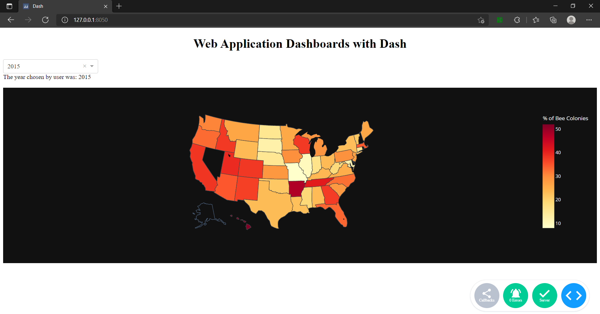
El codigo completo utlizado en este ejemplo es el siguiente
import pandas as pd
import plotly.express as px
import plotly.graph_objects as go
from dash import Dash, dcc, html, Input, Output
app = Dash(__name__)
df = pd.read_csv("https://raw.githubusercontent.com/lihkir/Uninorte/main/AppliedStatisticMS/DataVisualizationRPython/Lectures/Python/PythonDataSets/intro_bees.csv")
df = df.groupby(['State', 'ANSI', 'Affected by', 'Year', 'state_code'])[['Pct of Colonies Impacted']].mean()
df.reset_index(inplace=True)
print(df[:5])
app.layout = html.Div([
html.H1("Web Application Dashboards with Dash", style={'text-align': 'center'}),
dcc.Dropdown(id="slct_year",
options=[
{"label": "2015", "value": 2015},
{"label": "2016", "value": 2016},
{"label": "2017", "value": 2017},
{"label": "2018", "value": 2018}],
multi=False,
value=2015,
style={'width': "40%"}
),
html.Div(id='output_container', children=[]),
html.Br(),
dcc.Graph(id='my_bee_map', figure={})
])
@app.callback(
[Output(component_id='output_container', component_property='children'),
Output(component_id='my_bee_map', component_property='figure')],
[Input(component_id='slct_year', component_property='value')]
)
def update_graph(option_slctd):
container = "The year chosen by user was: {}".format(option_slctd)
dff = df.copy()
dff = dff[dff["Year"] == option_slctd]
dff = dff[dff["Affected by"] == "Varroa_mites"]
fig = px.choropleth(
data_frame=dff,
locationmode='USA-states',
locations='state_code',
scope="usa",
color='Pct of Colonies Impacted',
hover_data=['State', 'Pct of Colonies Impacted'],
color_continuous_scale=px.colors.sequential.YlOrRd,
labels={'Pct of Colonies Impacted': '% of Bee Colonies'},
template='plotly_dark'
)
return container, fig
if __name__ == '__main__':
app.run_server(debug=True)
Dash App Financiera¶
En esta aplicación graficaremos el precio de distintos stocks, junto al indicador de análisis tecnico,
Bollinger Bands. Este indicador consider para el stock, la media del orden de preferencia, y a esta le suma y resta la desviación estándar para tener la banda. Este indicador en bastante utilziado en análisis financieros, sobre todo cuando deseamos conocer posibles sectores de compra y venta.
Para esta app utlizaremos la librería
colorloverla cual nos permitirá obtener una escala de colores a elegir para nuestrasbollinger bands. Comenzamos por cargar elDataFrameque contiene los datos de los stocks de interés:AAPL, TSLA, COKE, YHOO, GOOGL, los cuales aparecen en nuestra columnaStock
df = pd.read_csv('https://raw.githubusercontent.com/lihkir/Uninorte/main/AppliedStatisticMS/DataVisualizationRPython/Lectures/Python/PythonDataSets/dash-stock-ticker-demo.csv')
df.head()
| Unnamed: 0 | Date | Open | High | Low | Close | Volume | ExDividend | SplitRatio | AdjOpen | AdjHigh | AdjLow | AdjClose | AdjVolume | Stock | |
|---|---|---|---|---|---|---|---|---|---|---|---|---|---|---|---|
| 0 | 0 | 2017-12-29 | 170.52 | 170.590 | 169.220 | 169.23 | 25643711.0 | 0.0 | 1.0 | 170.52 | 170.590 | 169.220 | 169.23 | 25643711.0 | AAPL |
| 1 | 1 | 2017-12-28 | 171.00 | 171.850 | 170.480 | 171.08 | 15997739.0 | 0.0 | 1.0 | 171.00 | 171.850 | 170.480 | 171.08 | 15997739.0 | AAPL |
| 2 | 2 | 2017-12-27 | 170.10 | 170.780 | 169.710 | 170.60 | 21672062.0 | 0.0 | 1.0 | 170.10 | 170.780 | 169.710 | 170.60 | 21672062.0 | AAPL |
| 3 | 3 | 2017-12-26 | 170.80 | 171.470 | 169.679 | 170.57 | 32968167.0 | 0.0 | 1.0 | 170.80 | 171.470 | 169.679 | 170.57 | 32968167.0 | AAPL |
| 4 | 4 | 2017-12-22 | 174.68 | 175.424 | 174.500 | 175.01 | 16052615.0 | 0.0 | 1.0 | 174.68 | 175.424 | 174.500 | 175.01 | 16052615.0 | AAPL |
Luego de cargar nuestro
DataFramenos disponemos a implementar nuestroapp.layouto “diseño” de la aplicación, tal como lo hicimos con la aplicación anterior. En este caso usamoshtml.H2que es una envoltura para el elemento<h2> de HTML5, elemento de encabezado de segundo nivel, en este caso también agragamos el logo dePlotly, usted puede agragar el logo de su preferencia.
html.Div([
html.H2('Finance Explorer',
style={'display': 'inline',
'float': 'left',
'font-size': '2.65em',
'margin-left': '7px',
'font-weight': 'bolder',
'font-family': 'Product Sans',
'color': "rgba(117, 117, 117, 0.95)",
'margin-top': '20px',
'margin-bottom': '0'
}),
html.Img(src="https://s3-us-west-1.amazonaws.com/plotly-tutorials/logo/new-branding/dash-logo-by-plotly-stripe.png",
style={
'height': '100px',
'float': 'right'
},
),
])
Luego de esto escribimos nuestro
dcc.Dropdowncon su respectivoidel cual sera invocado por nuesta funcióncallback. Eldcc.Dropdowncorresponde a nuestro menu de opciones para los diferentesstocks, en las que colocamos por defecto una lista con dos stocks['YHOO', 'GOOGL']. También creamo una división donde colocaremos cada una de las graficas asociadas a cada stock
dcc.Dropdown(
id='stock-ticker-input',
options=[{'label': s[0], 'value': str(s[1])}
for s in zip(df.Stock.unique(), df.Stock.unique())],
value=['YHOO', 'GOOGL'],
multi=True
),
html.Div(id='graphs')
Definimos la función encargada de calcular nuestro indicado de análisis tecnico. En esta definimos el periodo para nuestra media movil
window_size=10y además de esto el numero de desviaciones estandar a las que deseamos distar de esta medianum_of_std=5
def bbands(price, window_size=10, num_of_std=5):
rolling_mean = price.rolling(window=window_size).mean()
rolling_std = price.rolling(window=window_size).std()
upper_band = rolling_mean + (rolling_std*num_of_std)
lower_band = rolling_mean - (rolling_std*num_of_std)
return rolling_mean, upper_band, lower_band
Definimos ahora nuestra función
callbackla cual tendrá comoOutputen este caso las figuras correspondiente al indicador para cada stock. El mensaje de encabezado"Select a stock ticker."aparecerá si en la caja no aparece ningún stock, indicando que debe seleccionarse el simbolotickerdel stock de interés. Una vez recibido estetickerfiltramos nuestroDataFameporStockque coincida con elInpunt tickery seleccionamos para este nuevoDataFramelas columnas que necesitamos para el indicadorbollinger bandy seleccionamos de la escala de colores el color a utlizar en nuestras bandas de bollinger que será el input de la función encargada de calcular las bandasbbands, vamos escalando los colores de acuerdo a la banda que se va a dibujar. Vamos a ir agregando agraphscada una de las graficas que vamos obteniendo para mostrarlas todas en nuestra app una debajo de la otra. La figuras van indezadas conid=tickery son obtenidas al realizar la adición[candlestick] + bollinger_traces. Los siguiente comandos son usados para las dimensiones del margen en nuestra figura y la ubcación de la leyenda:'margin': {'b': 0, 'r': 10, 'l': 60, 't': 0},y'legend': {'x': 0}.
@app.callback(Output('graphs','children'),
[Input('stock-ticker-input', 'value')])
def update_graph(tickers):
graphs = []
if not tickers:
graphs.append(html.H3(
"Select a stock ticker.",
style={'marginTop': 20, 'marginBottom': 20}
))
else:
for i, ticker in enumerate(tickers):
dff = df[df['Stock'] == ticker]
candlestick = {
'x': dff['Date'],
'open': dff['Open'],
'high': dff['High'],
'low': dff['Low'],
'close': dff['Close'],
'type': 'candlestick',
'name': ticker,
'legendgroup': ticker,
'increasing': {'line': {'color': colorscale[0]}},
'decreasing': {'line': {'color': colorscale[1]}}
}
bb_bands = bbands(dff.Close)
bollinger_traces = [{
'x': dff['Date'], 'y': y,
'type': 'scatter', 'mode': 'lines',
'line': {'width': 1, 'color': colorscale[(i*2) % len(colorscale)]},
'hoverinfo': 'none',
'legendgroup': ticker,
'showlegend': True if i == 0 else False,
'name': '{} - bollinger bands'.format(ticker)
} for i, y in enumerate(bb_bands)]
graphs.append(dcc.Graph(
id=ticker,
figure={
'data': [candlestick] + bollinger_traces,
'layout': {
'margin': {'b': 0, 'r': 10, 'l': 60, 't': 0},
'legend': {'x': 0}
}
}
))
return graphs
Así vamos a visualizar nuestra plicación luego de cada uno de los paso mencionados anteriormente
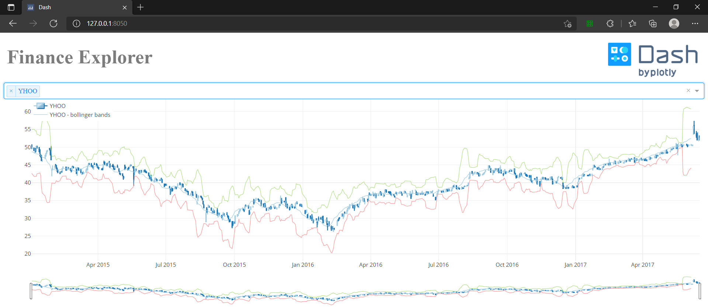
La codigo completo de la app lo presentamos a continuación. Ejecutela desde su terminal o editor
VS Codepor ejemplo
from dash import Dash, dcc, html, Input, Output
import colorlover as cl
import datetime as dt
import flask
import os
import pandas as pd
import time
app = Dash(__name__)
server = app.server
app.scripts.config.serve_locally = False
colorscale = cl.scales['9']['qual']['Paired']
df = pd.read_csv('https://raw.githubusercontent.com/lihkir/Uninorte/main/AppliedStatisticMS/DataVisualizationRPython/Lectures/Python/PythonDataSets/dash-stock-ticker-demo.csv')
app.layout = html.Div([
html.Div([
html.H2('Finance Explorer',
style={'display': 'inline',
'float': 'left',
'font-size': '2.65em',
'margin-left': '7px',
'font-weight': 'bolder',
'font-family': 'Product Sans',
'color': "rgba(117, 117, 117, 0.95)",
'margin-top': '20px',
'margin-bottom': '0'
}),
html.Img(src="https://s3-us-west-1.amazonaws.com/plotly-tutorials/logo/new-branding/dash-logo-by-plotly-stripe.png",
style={
'height': '100px',
'float': 'right'
},
),
]),
dcc.Dropdown(
id='stock-ticker-input',
options=[{'label': s[0], 'value': str(s[1])}
for s in zip(df.Stock.unique(), df.Stock.unique())],
value=['YHOO', 'GOOGL'],
multi=True
),
html.Div(id='graphs')
], className="container")
def bbands(price, window_size=10, num_of_std=5):
rolling_mean = price.rolling(window=window_size).mean()
rolling_std = price.rolling(window=window_size).std()
upper_band = rolling_mean + (rolling_std*num_of_std)
lower_band = rolling_mean - (rolling_std*num_of_std)
return rolling_mean, upper_band, lower_band
@app.callback(Output('graphs','children'),
[Input('stock-ticker-input', 'value')])
def update_graph(tickers):
graphs = []
if not tickers:
graphs.append(html.H3(
"Select a stock ticker.",
style={'marginTop': 20, 'marginBottom': 20}
))
else:
for i, ticker in enumerate(tickers):
dff = df[df['Stock'] == ticker]
candlestick = {
'x': dff['Date'],
'open': dff['Open'],
'high': dff['High'],
'low': dff['Low'],
'close': dff['Close'],
'type': 'candlestick',
'name': ticker,
'legendgroup': ticker,
'increasing': {'line': {'color': colorscale[0]}},
'decreasing': {'line': {'color': colorscale[1]}}
}
bb_bands = bbands(dff.Close)
bollinger_traces = [{
'x': dff['Date'], 'y': y,
'type': 'scatter', 'mode': 'lines',
'line': {'width': 1, 'color': colorscale[(i*2) % len(colorscale)]},
'hoverinfo': 'none',
'legendgroup': ticker,
'showlegend': True if i == 0 else False,
'name': '{} - bollinger bands'.format(ticker)
} for i, y in enumerate(bb_bands)]
graphs.append(dcc.Graph(
id=ticker,
figure={
'data': [candlestick] + bollinger_traces,
'layout': {
'margin': {'b': 0, 'r': 10, 'l': 60, 't': 0},
'legend': {'x': 0}
}
}
))
return graphs
if __name__ == '__main__':
app.run_server(debug=False)
Conclusión
Por medio de estas dos aplicaciones se ha abordado cada concepto básico relacionado con el diseño de una app utlizando
DashyPlotlyteniendo en cuenta lo estudiado en secciones anteriores. Ahora procedemos a estudiar como podemos desplegar nuestra aplicación enHeroku. Para esto usaremos la cuenta creada en la sección dePostgreSQL
Despliegue de Dash App¶
Tutorial¶
El despliegue de nuestra aplicación es de suma importancia, para lograr que nuestra app esté disponible para su uso. Por ejemplo si realizas un estudio estadístico predictivo para una compañía que te ha contratado, lo que espera tu cliente es un link con la pagina web de tu app, que le permita acceder al
dashboardque has diseñado, e interactuar con este utilizando las componentes dinámicas que agregaste antes. Para poder suministrar este link a nuestro cliente necesitamos desplegar nuestra app en una plataforma de servicios de computo en la nube. En este caso usamosHerokupor se gratuito y facil de usar.
Iniciaremos creando una nueva aplicación en nuestro dashboard de
Heroku, en la cual van a reposar todos los archivos que vamos a crear para hacer el despliegue de nuestra aplicación. Para esto accedemos a nuestra cuenta enhttps://www.heroku.comy nos dirigimos al botonNew/Create new app
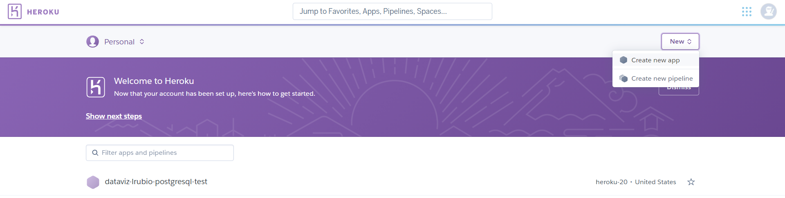
Coloquele un nombre de se preferencia para identificarla y haga click en
Create app
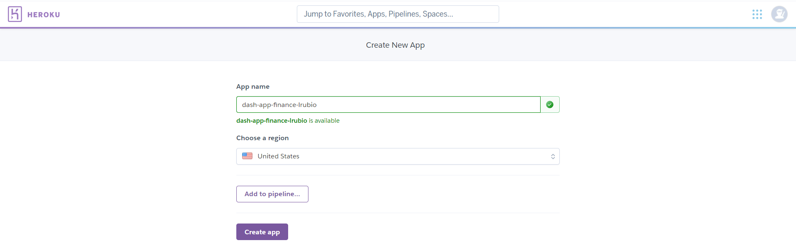
Luego de crearla podrá visualizar el procedimiento que se debe llevar a cabo para desplegar nuestra
app. A este paso volveremos al final cuando tengamos preparada la aplicación con los archivos de despliegue correspondientes
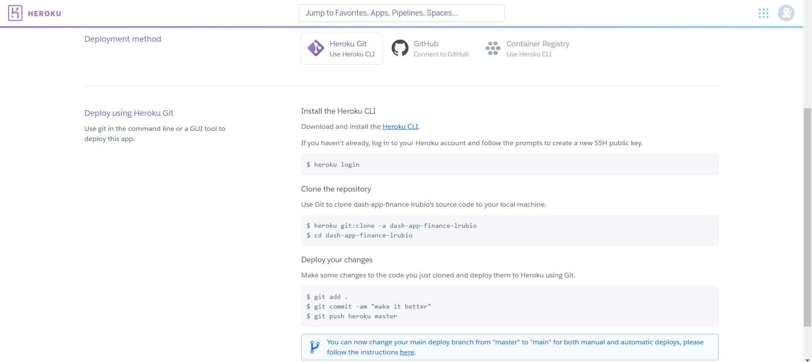
Procedemos ahora a crear un proyecto de despliegue para nuestra app. Para esto primero debemos crear una carpeta con el nombre del proyecto, puede usar el nombre de la app creada en
Herokupor ejemplo. Luego, dentro de esta carpeta creamos y activamos un ambiente llamadovenven el que instalaremos las librerías que requiere nuestra app para su funcionamiento
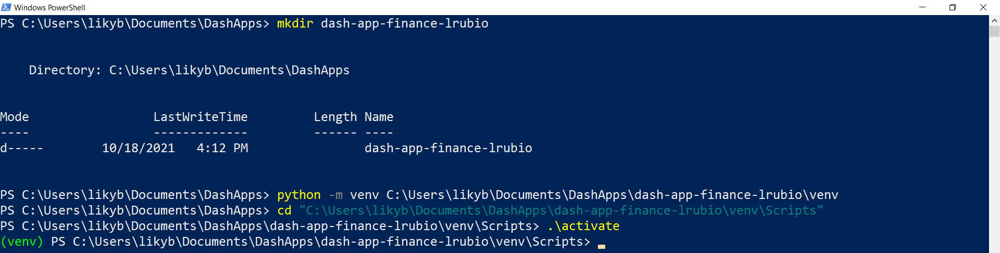
Dentro de esta carpeta vamos a pegar el archivo
.pyde nuestra app. Utilizaremos para la edición del resto de archviso necesario y el despliegue de la app el editorVS Code, el cual el de uso libre y puede ser instalado desde el siguiente link VS Code
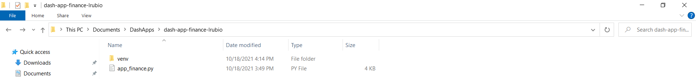
Vamos a abrir nuestra app utilizando usando
VS Codey vamos a agregar la siguiente linea de código:server = app.serverjusto despues que creamos la instancia de nuestra app. Esta línea permitirá queHerokureconozca tu app y la conecte el servidor
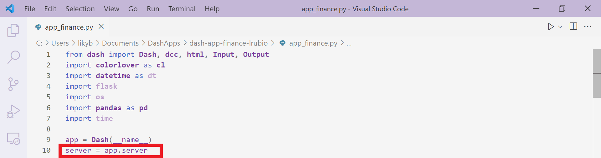
En su terminal de
Powershelingrese a la carpeta donde está su proyecto e instale con el enviroment activo, todas las librerías que su aplicación necesitará para su funcionamiento. En este caso para la app financiera que hemos estudiado en la sección pasada necesitaremos, la última del listado es de gran importancia, dado que la necesitaHerokupara correr nuestra aplicación en el servidorpip install pandaspip install plotlypip install dashpip install colorloverpip install gunicorn
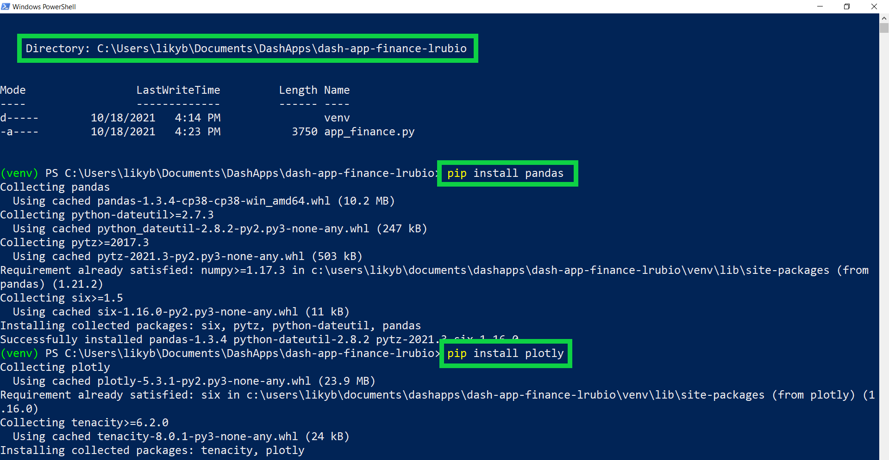
El siguiente paso es crear un un nuevo archivo que nombraremos
.gitignore. Este archivo le dirá agitque debe ignorar como parte de tu proyecto. El archivo debe contener lo siguiente, y lo crearemos usandoVS Code
venv *.pyc .DS_Store .env
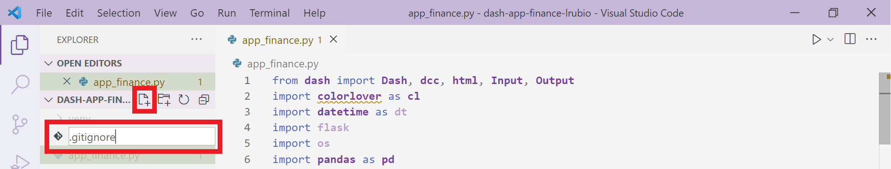 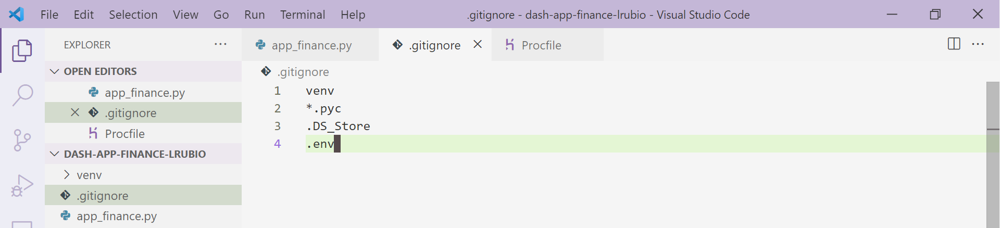
De la misma forma ahora crearemos dentro de la misma carpeta del proyecto un nuevo archivo que nombraremos
Procfiley la siguiente línea de código dentro. Nótese queapp_financese refiere al nombre del archivo.pyde nuestra app,serverse refiere a la variable server dentro de ese archivo.
web: app_finance:server
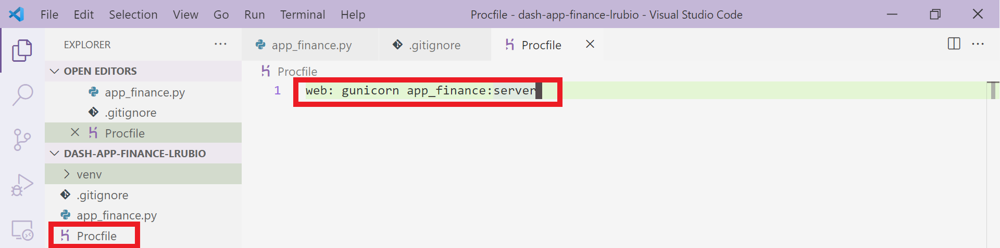
Ahora creamos el archivo de requirements, el cual
Herokuusará para identificar que tipo de librería a descargar. Para esto dentro de su terminal escribapip freeze > requirements.txt.pip freezese encarga de generar un archivo de requisitosrequirements.txtpara isntalar en mismo ambiente en otro entorno, en este casoHeroku. Pruebe la terminal deVS Codeesta vez para que se familiarice también con su uso. Nótese que se debe selecionar comointerpreterenVS Codeel ambiente creado para el proyecto. Verifique también que la app funciona correctamente en este enviroment. Nótese que al final de la compilación se crea el archivo de requirements en nuestro proyecto
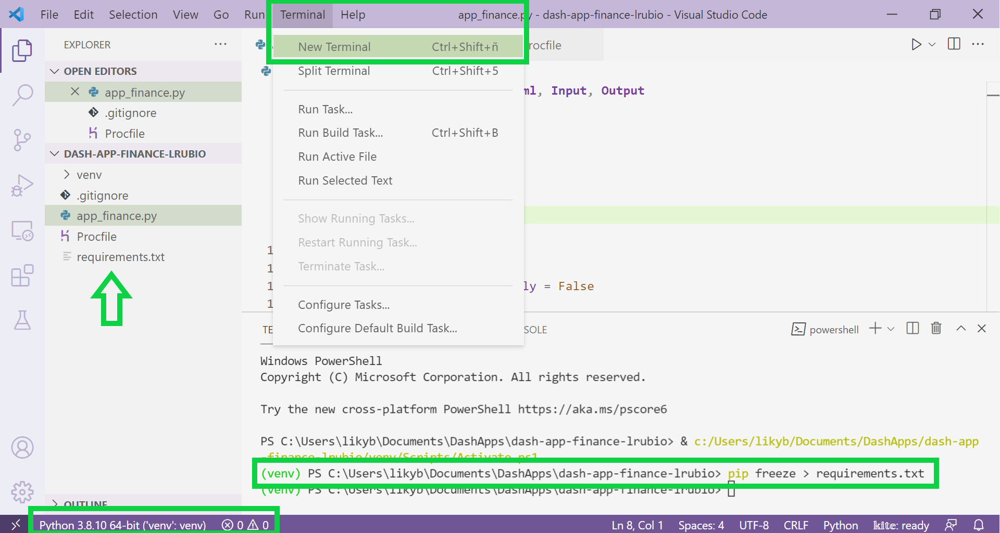
El siguiente paso es logearse en
Herokupara poder usar el cliente,Heroku CLIel cual usaremos de ahora en adelante para subir nuestro proyecto a la nube. Para esto desde la misma terminal ejecutamos el siguiente comando para acceder al cliente, este abrirá la venta en su navegador para el login y luego podrá hacer uso del cliente. Es el mismo procedimiento realizado en la importación de la base de datos enHeroku Postgres
heroku login
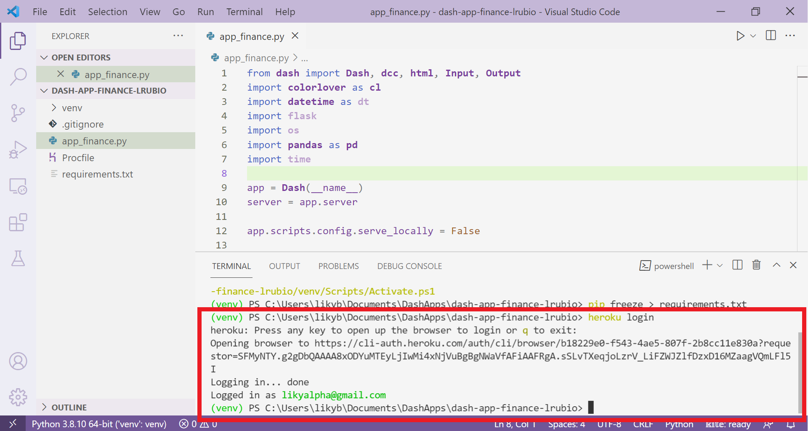
Ahora use:
git initpara iniciar en un repositoriogitel cual será utilizado porHerokupara pushear nuestro proyecto en la nube. Debe aparecer el mensaje de inicialización de un repositoriogitvacio. Los pasos siguientes aparecen en nuestra app creada enHeroku
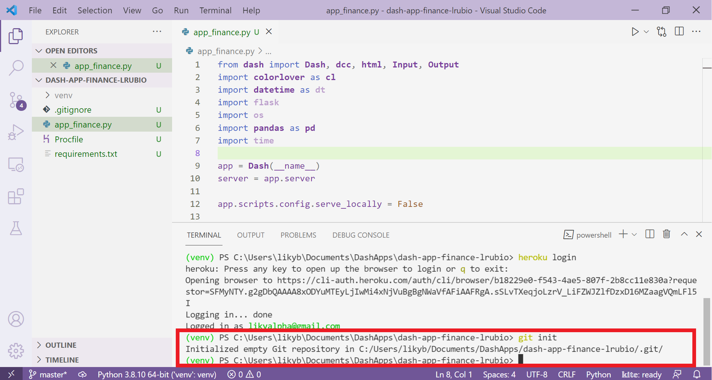
Luego utlice el siguiente comando:
heroku git:remote -a dash-app-finance-lrubio, para agregar remotamente congitla repo correspondiente al proyecto enHeroku. Tenga en cuenta que debe escribir el nombre de la app creada enHerokucorrectamente. El comando usado antetirmente crea un nuevo control remoto con el nombre de nuestra app ubicado en el repositorio inicializado, una vez que haga esto, usando compandospushse puede empujar el proyecto aHeroku
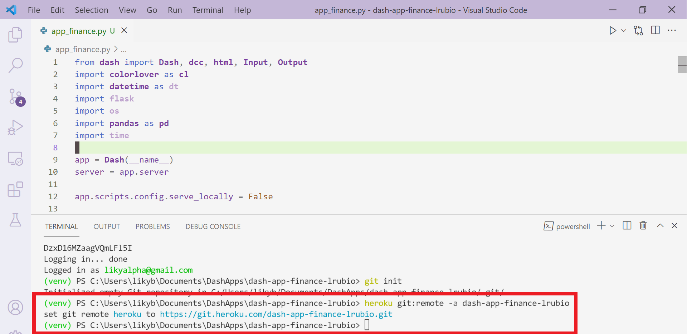
Luego use los siguientes comandos para empujar nuestro proyecto a
Herokuusandogitgit add .git commit -am "App Launch"git push heroku master
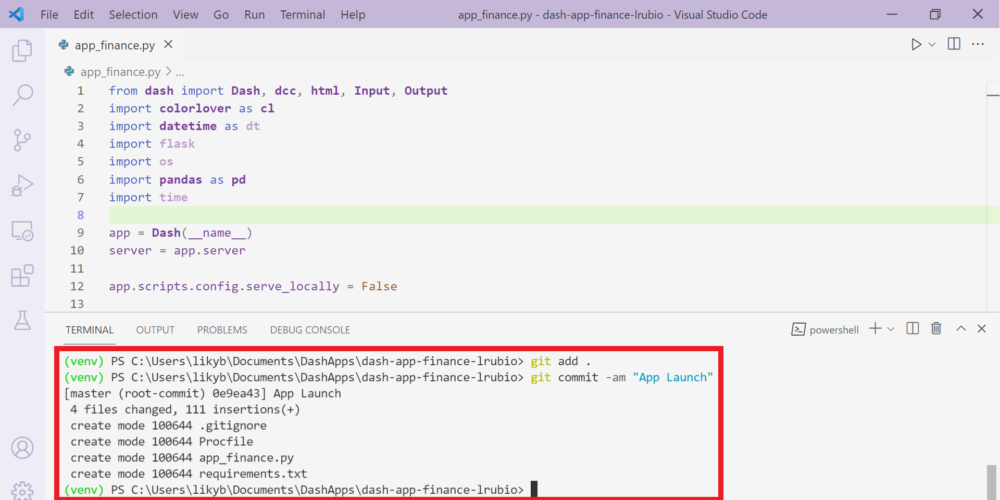
Luego de hacer push. Debe esperar un momento a que se instale todo lo que necesita
Herokupara desplegar nuestra app en su servidor. Esta proceso puede tomar unos cuantos minutos. Al final debe aparecer el siguiente mensaje con el link del domino de nuestra app con el nombre que utlizamos para identificarla y el deHeroku, en este caso:https://dash-app-finance-lrubio.herokuapp.com/. Haga click sobre este link y podrá visualizar sua plicación web
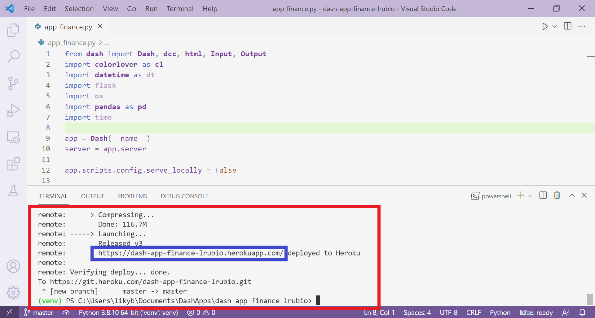
Si desea hacer un cambio, porque por ejemplo obtuvo errores, debe hacerlos en el directorio de su proyecto y clonarlo nuevamente con los nuevos cambios siguiendo los siguientes pasos, que anteriormente ejecutó. Primero ejecute
heroku git:clone -a dash-app-finance-lrubio
Luego sobre el archivo clonado copie los archivos que modificó para corregir el error, y luego realice los siguientes pasos para subir nuevamente su proyecto
cd dash-app-finance-lrubiogit add .git commit -am "make it better"git push heroku master
Desde su cuenta de
Herokutambién puede desplegar la aplicación haciendo click enOpen app
Cuando abra el link obtenido puede visualizar su aplicación. Este link puede entregarselo a un cliente que lo haya contratado para realizar un análisis estadístico predictivo para la toma de decisiones en su compañia
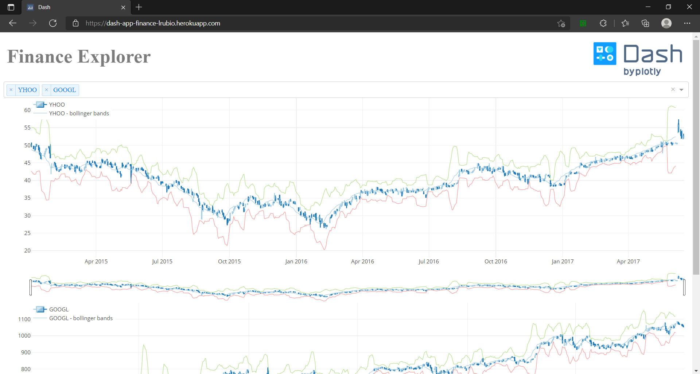